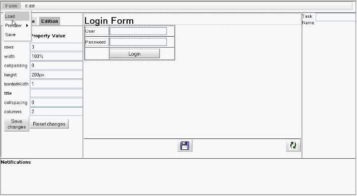

jBPM Form Builder project follow-up of the week
As I’ve mentioned before, the jBPM Form Builder project has been going for a few weeks and it’s getting more interesting every week! Today we finally added a REST API that allows the project to store and obtain form definitions in Guvnor. The API exposes forms through the URL:
http://yourserver.com/org.jbpm.formbuilder.FormBuilder/fbapi/formDefinitions/
And UI components throught the URL
http://yourserver.com/org.jbpm.formbuilder.FormBuilder/fbapi/formItems/
Here’s a video by clicking on the screenshot
As new functionalities go, the Form Builder now has the following new features:
– REST API for forms and ui components
– Copy / Cut / Paste functionalities, both with keyboard shortcuts and menu options
– Tree view, from which there’s a screenshot below:

You can see all new technical configurations from here
See you all next wednesday for a new update, and feel free to comment!